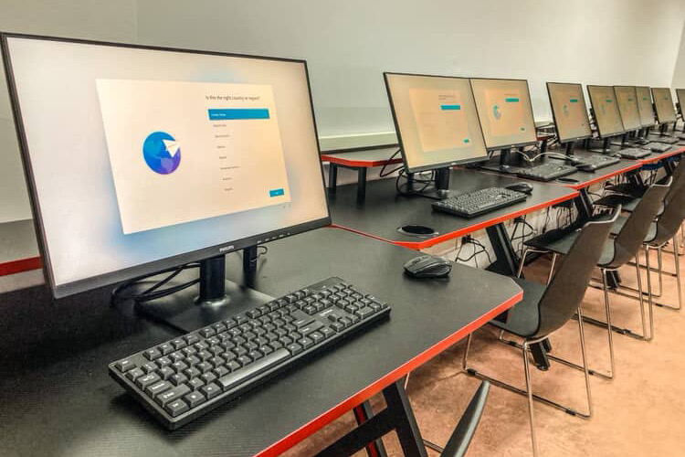

U filmovima i reklamama mlađe generacije izgledaju kao hakeri koji u tri klika sa telefona upravljaju satelitima i pišu kodove dok spavaju. Međutim, kada se u učionici podigne poklopac laptopa ili uključi radna stanica, mit o „digitalnim genijalcima” brzo se susretne sa surovo duhovitom realnošću.
Evo nekoliko autentičnih anegdota sa časova i radionica koje najbolje oslikavaju jaz između skrolovanja i stvarne digitalne pismenosti.
Anegdota 1: Misterija nestalog dokumenta
Zadatak je bio jednostavan: otvoriti tekstualni dokument, napisati tri pasusa i sačuvati fajl. Nakon pola sata predanog rada, iz trećeg reda čuje se blag panika: „Profesore, meni je kompjuter obrisao sve!”.
Dolazimo do računara — radna površina je prazna, program zatvoren. Nakon kratke istrage i otvaranja foldera Downloads, pronalazimo ukupno šest verzija istog dokumenta pod nazivima Untitled.docx, Untitled(1).docx pa sve do Untitled_konačno_v2.docx. Dokument nije nestao; samo je ostao zarobljen u bespućima privremenih foldera jer niko nije definisao gde fajl treba da se sačuva.
„Koncept hijerarhije folder/fajl generaciji koja sve pretražuje preko polja za pretragu na telefonu deluje kao napredna kvantna fizika. Ali kad jednom shvate stazu (path), sve legne na svoje mesto.”
Anegdota 2: Trka palčeva protiv fizičke tastature
Svi znaju da otkucaju 120 poruka u minuti na Viberu ili Instagramu koristeći samo dva palca. Ali kada je pred učenika stavljena standardna fizička tastatura bez automatskog ispravljanja grešaka (auto-correct), nastaje neočekivani zastoj.
Traženje slova `Č`, `Ć` ili kombinacije `Ctrl + C` i `Ctrl + V` pretvara se u pravu potragu za blagom. Jedan od učenika je iskreno prokomentarisao: „Brate, zašto tastatura nema dugme za emotikone i gde je Enter na ovoj velikoj kocki?”.
Anegdota 3: „Pokvario se internet” (a samo treba uneti lozinku)
Tokom radionice o Cloud alatima, jedan od računara odjednom izbacuje prozor sa zahtevom za verifikaciju naloga. Učenik podiže ruku i kaže da kompjuter ne radi i da je sistem pao.
Na pitanje šta piše na ekranu, odgovor je bio kratko: „Ne znam, izašlo je neko obaveštenje pa sam samo kliknuo X”. Naviknutost da se sva sistemska upozorenja zatvaraju bez čitanja najčešći je uzrok bezbednosnih propusta i prividnih „kvarova” koji se zapravo rešavaju za tri sekunde pažljivog čitanja.
Lekcija iza smeha
Ove anegdote nisu tu da bi se iko podsmevao mladima — protivnik nije njihova inteligencija, već naviknutost na pametne uređaje koji sve rade umesto njih.
Lepota rada u učionici jeste u tome što onog momenta kada im se kroz humor i praktične primere demistifikuje rad računara, oni izuzetno brzo savladaju prepreke. Od prvog izgubljenog `Untitled.docx` fajla do samostalnog vođenja projekta u Cloud-u prolazi samo malo vremena i prave podrške.